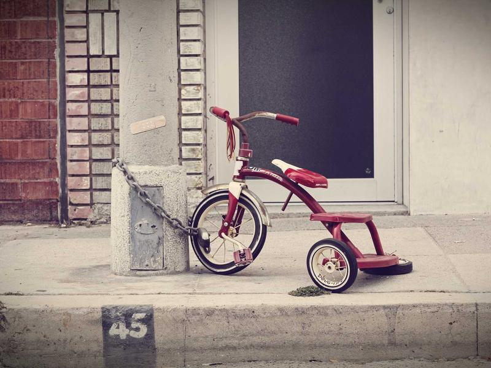

1. Local files
HTML, CSS, and downloaded image assets authored in a plain project folder.
Generated by Claude, versioned on GitHub, and served from GitHub Pages.
Learn moreThis page exists to verify a full workflow: writing HTML/CSS locally, downloading image assets, pushing everything to a GitHub repository, and hosting the result on a static host (GitHub Pages). No backend, no build step — just plain files served as-is.
HTML, CSS, and downloaded image assets authored in a plain project folder.
Everything committed and pushed to a public repository for version control.

GitHub Pages serves the repo directly — no server, no database.
This is a demo page — no real contact form, just a placeholder to round out the layout.
hello@example.com